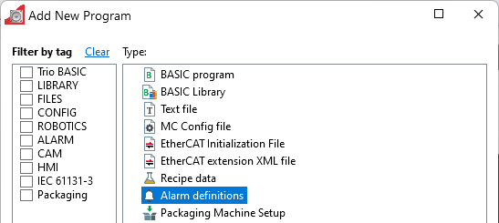
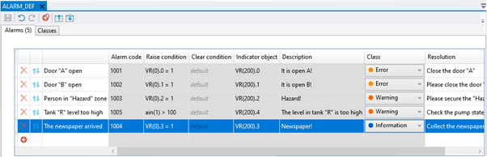
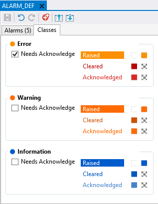
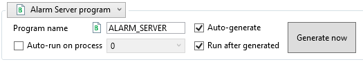
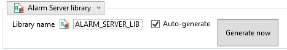

A built-in functionality for alarm support is based on a new type of data on the controller called Alarm Definitions project item.

The alarm definitions controller data item is a dedicated data structure that holds the defined alarms with their parameters (data fields). There are set of mandatory parameters for each alarm. One can add additional (custom) data parameters if the project design requres it.
Here is a sample content of the alarm definitions file opened in the dedicated MotionPerfect editor:

The mandatory fields are described below.
There are three pre-defined alarm classes at present:

The alarm message outlook (respected by HMI implementation) can be changed from here.
The alarm server program is delivered from the alarm definitions. Its purpose is to watch for alarm trigger (raise or clear) conditions. When an alarm trigger condition has changed the program does the following:
The alarm server program is generated automatically by MotionPerfect. There are two options for its code generation:

This option shall be chosen when a stand-alone ALARM_SERVER basic program is needed. This program is generated from the content of Alarm definitions. When run it will watch for alarm trigger conditions and dispatch appropriate events. Also set the indicator objects for the alarms as per alarm definitions. There are different options that facilitate generation and running the program. The program appears in the Project tree as a normal BASIC program and can be operated as such. Modifying this program by hand is not advised as it may get overwritten by MotionPerfect at some point.

This option can be chosen when the project would not need a dedicated process running the alarm server code. A BASIC library is generated instead. It has two functions – initializer and alarm check function. The project developer would need to call the library initializer function once and then periodically call the alarm check function. Such a case might be suitable for projects with limited process count or when the alarm check should be done on a certain period. Please be aware that calling the alarm check function too often (times per second) may lead to controller performance hit.
Please refer to the generated library code for details.
Uniplay supports corresponding UI components for displaying the alarm state and the alarm event log. Please refer the HMI help for more details.